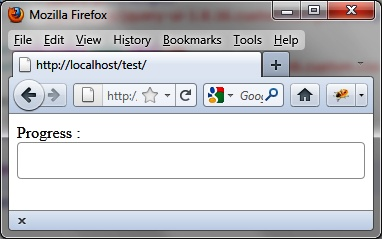

{% include JB/setup %}
{% raw %}
<div>
<div class="calibre13"></div><div class="book" title="Chapter 6. Progress Bars"><div class="book"><div class="book"><div class="book"><div class="calibre13"></div><h1 class="title1"><a id="progress_bars" class="calibre1"></a>Chapter 6. Progress Bars</h1></div></div></div><p class="calibre7">Progress bars allow you to view the progress of a task, such as
  transferring a file. jQuery UI can handle them easily.</p><div class="book" title="Basic Principles of Progress Bars"><div class="book"><div class="book"><div class="book"><h1 class="title2"><a id="basic_principles_of_progress_bars" class="calibre1"></a>Basic Principles of Progress Bars</h1></div></div></div><p class="calibre7">Suppose we want to write the HTML code to display the progress bar
    shown in <a class="ulink" href="ch06.html#progress_bar" title="Figure 6-1. Progress bar">Figure 6-1</a>. This is a container that will
    gradually fill in to indicate the progress of a task (for the moment, it
    is almost empty and will start to fill in from the left side).</p><div class="book"><div class="figure"><a id="progress_bar" class="firstname"></a><div class="book"><div class="book"><a id="I_mediaobject6_d1e4597" class="firstname"></a></div></div><p class="title4">Figure 6-1. Progress bar</p></div></div><p class="calibre7">As required by jQuery UI, we represent the progress bar with a
    <code class="literal">&lt;div&gt;</code> element (shown in
    bold):</p><a id="I_programlisting6_d1e4607" class="firstname"></a><pre class="programlisting">&lt;script src = jquery.js&gt;&lt;/script&gt;
&lt;script src = jqueryui/js/jquery-ui-1.8.16.custom.min.js&gt;&lt;/script&gt;

&lt;link rel=stylesheet type=text/css
      href=jqueryui/css/smoothness/jquery-ui-1.8.16.custom.css /&gt;

<span class="firstname"><strong class="userinput">Progress : &lt;div id=progressbar&gt;&lt;/div&gt;</strong></span>

&lt;script&gt;

<span class="firstname"><strong class="userinput">$("div#progressbar").progressbar ();</strong></span>

&lt;/script&gt;</pre><p class="calibre7">This indicates that each <code class="literal">&lt;div&gt;</code> element corresponding to the
    progress bar is managed by the jQuery UI <code class="literal">progressbar ()</code> method.</p></div></div></div>

{% endraw %}

